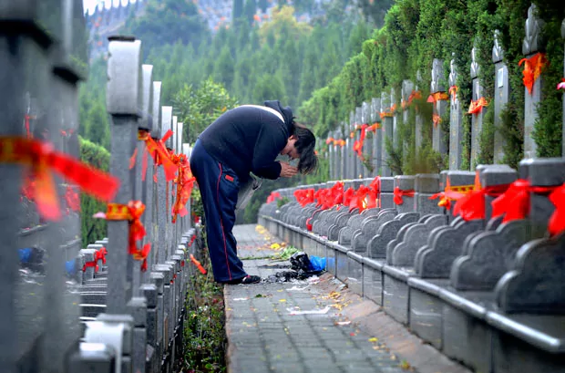
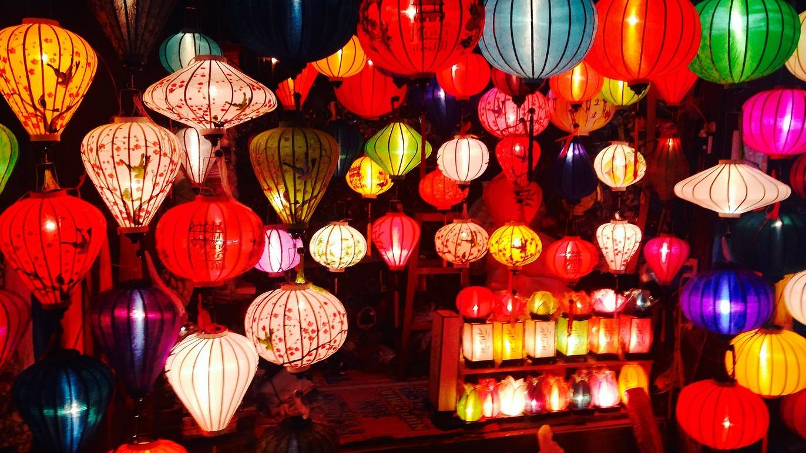

Chinese New Year
Lunar New Year is a celebration of the arrival of spring and the beginning of a new year on the lunisolar calendar. It is the most important holiday in China, and it is also widely celebrated in South Korea, Vietnam, and countries with a significant overseas Chinese population.
Commonly known as the Spring Festival in China, Lunar New Year is a fifteen-day celebration marked by many traditions. At home, families decorate windows with red paper cuttings and adorn doors with couplets expressing auspicious wishes for the new year. Shopping for holiday sundries in open-air markets and cleaning the house are also beloved traditions. The fifteenth and final day of the holiday is the Lantern Festival, during which people have tangyuan, or sweet glutinous rice balls, and children carry lanterns around the neighborhood at night to mark the end of the celebration.
According to legend, Chinese New Year started with a mythical beast called the Nian (a beast that lives under the sea or in the mountains) during the annual Spring Festival. The Nian would eat villagers, especially children in the middle of the night. One year, all the villagers decided to hide from the beast. An older man appeared before the villagers went into hiding and said that he would stay the night and would get revenge on the Nian. The old man put red papers up and set off firecrackers. The day after, the villagers came back to their town and saw that nothing had been destroyed. They assumed that the old man was a deity who came to save them. The villagers then understood that Yanhuang had discovered that the Nian was afraid of the color red and loud noises. Then the tradition grew when New Year was approaching, and the villagers would wear red clothes, hang red lanterns, and red spring scrolls on windows and doors and used firecrackers and drums to frighten away the Nian. From then on, Nian never came to the village again.
Qing Ming（清明节）
 Qingming Festival, also known as Tomb Sweeping Day, is a traditional Chinese festival that falls on the 15th day after the Spring Equinox. It is a day when the Chinese people pay their respects to their ancestors. They do this by visiting and cleaning their graves. The festival has been observed for over 2,500 years and is considered one of the most important festivals in the Chinese calendar.
Tomb Sweeping Day is an important day for the Chinese people. First, it is a day to honor the ancestors. Second, it is a day to show respect to the dead. The Chinese people believe that by visiting the graves of their ancestors and offering sacrifices, the living can help to ensure that their ancestors are at peace in the afterlife. Also, it is a way for families to come together and bond over their shared heritage and traditions.
Traditionally, a family will burn spirit money (joss paper) and paper replicas of material goods such as cars, homes, phones and paper servants. This action usually happens during the Qingming festival. In Chinese culture, it is believed that people still need all of those things in the afterlife. Then family members take turns to kowtow three to nine times (depending on the family adherence to traditional values) before the tomb of the ancestors. Offerings would typically include traditional food dishes and the burning of joss sticks and joss paper. Some of the traditional food and drinks offered during Qingming Festival includes fish, meat, vegetables, liquor.
Mid Autumn Festival
 The Mid-Autumn Festival, also known as the Moon Festival or Mooncake Festival, is a harvest festival celebrated in Chinese culture. It is held on the 15th day of the 8th month of the Chinese lunisolar calendar with a full moon at night. On this day, the Chinese believe that the moon is at its brightest and fullest size, coinciding with harvest time in the middle of autumn.
During the festival, lanterns of all size and shapes – which symbolize beacons that light people's path to prosperity and good fortune – are carried and displayed. Mooncakes, a rich pastry typically filled with sweet-bean, egg yolk, meat or lotus-seed paste, are traditionally eaten during this festival. The Mid-Autumn Festival is based on the legend of Chang'e, the Moon goddess in Chinese mythology. Activities during the Mid-Autumn Festival involves family gathering to eat mooncakes and gaze at the full moon, children carrying lanterns while walking around the neighborhood, and also lighting up "Kong Ming" lanterns to put up into the sky.
Lanterns
Meanings behind it
- A notable part of celebrating the holiday is the carrying of brightly lit lanterns, lighting lanterns on towers, or floating sky lanterns. Another tradition involving lanterns is to write riddles on them and have other people try to guess the answers
- It is difficult to discern the original purpose of lanterns in connection to the festival, but it is certain that lanterns were not used in conjunction with Moon-worship prior to the Tang dynasty. Traditionally, the lantern has been used to symbolize fertility, and functioned mainly as a toy and decoration. But today the lantern has come to symbolize the festival itself. In the old days, lanterns were made in the image of natural things, myths, and local cultures. Over time, a greater variety of lanterns could be found as local cultures became influenced by their neighbors.